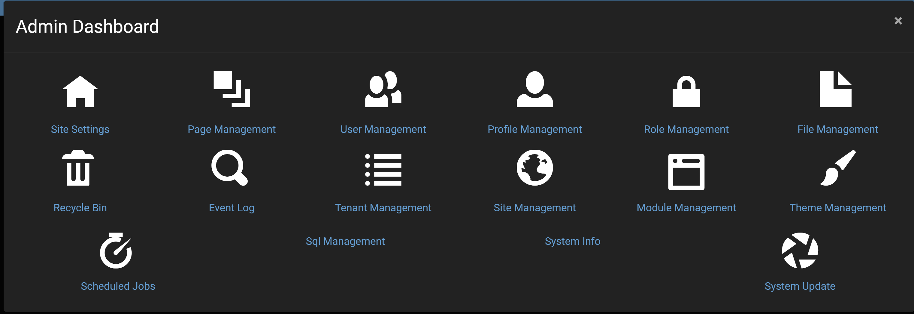

Admin Management Introduction
The admin dashboard has a variety of different tools for administrators to use in order to better manage their website and to add a great amount of functionality to the website. By selecting the gear icon in the top right of a page while being on an administrator account, then selecting the admin dashboard option at the top of the control panel, which will bring up a menu with a variety of options that can be selected.

The default options in the dashboard that Oqtane offers for an administrator to use are:
- Site Settings: Which provides a variety of settings to be able to modify and personalize your website with more information in the site settings.
- Page Management: Which provides a list of all pages on your website and provides the ability to to manipulate them in a variety of ways with more info on page management.
- User Management: Which allows for the additional and modification of user accounts with more info on user management.
- Profile Management: Which lets you specify what informational fields are available for a user to both optionally have and must have on their account with more info on profile management.
- Role Management: Which specifies what type of security group the user's account belongs in like giving an account administrative rights, with more info on role management.
- File Management: Which allows the uploading of files like images to be inserted into pages with more info on file management.
- Recycle Bin: Which allows for the restoration or full deletion of pages that were previously deleted with more info on recycle bin. If you want to add new options to the admin dashboard, then that can be done by creating a new page either in the control panel or in the admin dashboard's page management and specifying that you want "Admin" as the parent of the new page.